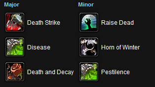

Death Knight Overview:
The Death Knight is the first new class addition to World of Warcraft in four years. The class features an all new runic fighting system, a new starter area, and to top it off, an amazing class quest line that ends in truely epic way. There is something for everyone offered in the Death Knight Class. Whether you want to be able to heal yourself, deal massive DPS, or take on hordes of enemies with AoE damage, your Death Knight has the ability to do so. Any race can play as a Death Knight, but to unlock the class, players must have a character level 55 or above already made on a realm. Once the class is unlocked for the account, a death knight can be created on any realm where the player has a level 55 or higher character. Blizzard plans to relax the restriction and allow creation on all realms at some point after release.
The death knight starts at level 55 in Acherus: The Ebon Hold over the Eastern Plaguelands, with multiple spells and abilities ready to use, and a set of uncommon gear.
Rune System:
The death knight uses a unique rune-based resource system to use their spells and abilities. Three rune types: Blood, Frost, and Unholy, each with an attached color and symbol. As they use an an ability, the runes needed for that ability will undergo a cooldown period before they can be used again (10 seconds). The Death Knight will be able to use spells to turn a rune into a Death Rune, which can be used as a Blood/Frost/Unholy rune. In addition, whenever the Death Knight uses a rune ability against a foe, it will build up a certain amount of Runic Power. Runic Power can be used for special finisher attacks. Death Knight's also get the Runeforging skill, which allows the player to enchant their weapons. Death Knights learn Runeforging in the start area, after a few quests. When near a Runeforge you will be able to click a spell in your spell book, just like enchanting, and then choose an "enchant" to perform on the weapon. Runeforging will overwrite enchants.
Currently there are 8 different 'enchants' you can place on your weapon.
- Rune of Cinderglacier: Affixes your rune weapon with a rune that has a chance to increase the damage by 20% for your next 2 attacks that deal Frost or Shadow damage. This is what you will want to use on your weapon throughout the starter area portion of the game (55-58)
- Rune of Lichbane: Affixes your rune weapon with a rune that adds 2% extra weapon damage as Fire damage or 4% versus Undead targets. This is what you will want to use on your weapons in the plaguelands, as there are plenty of undeads.
- Rune of Razorice: Affixes your rune weapon with a rune that adds 2% extra weapon damage as Frost damage and has a chance to increase Frost vulnerability. This is what you will want to use in Outland.
- Rune of Spellbreaking: Affixes your rune weapon with a rune that deflects 2% of all spell damage and reduces the duration of Silence effects by 50%.
- Rune of Spellshattering: Affixes your rune weapon with a rune that deflects 4% of all spell damage and reduces the duration of Silence effects by 50%.
- Rune of Swordbreaking: Affixes your rune weapon with a rune that increases Parry chance by 2% and reduces the duration of Disarm effects by 50%.
- Rune of Swordshattering: Affixes your rune weapon with a rune that increases Parry chance by 4% and reduces the duration of Disarm effects by 50%.
- Rune of the Fallen Crusader: Affixes your rune weapon with a rune that has a chance to heal you for 3% and increase total strength by 30% for 15 sec. This is what you will want to use in Northrend.
Class Role:
In general, the death knight can be considered a hybrid class that combines damage dealing and tanking. They will wear plate armor, and be able to dual wield or use two-handed blade weapons and maces. Like druids, they will tank without shields. Their tanking mechanics will most likely be high armor as indicated by Frost Presence, and by having a high chance to parry. Blizzard has said that their tanking niche will be caster-type enemies. A common assumption among fans is that Hero Classes will be overpowered, however Blizzard has stated on announcing the Death Knight that they will be of similar strength and value to existing classes.
Playing as a Death Knight:
As you quest in the starter area, you will want to runeforge your weapons with Rune of Cinderglacier. The best weapons for leveling are two handed swords, axes and maces. Generally the best spell rotation involves using a Frost spell, an Unholy spell, a blood spell twice, repeating the chain as many times as nessasary, and then closing the battle with a finishing runic power spell.
The most basic rotation is:
Death Grip Icy Touch | Plague Strike | Pestilence | Heart Strike | Death Strike | Death Coil
Or in longer battles:
Death Coil Icy Touch | Plague Strike | Pestilence | Heart Strike | Death Strike | Death Coil | Death Strike | Death Coil
Recommened Gear
The Death Knight starter will provide you with a full set of blues to get you started, but once you leave Ebon Hold and venture out into the other lands you may want to upgrade your gear. If you're looking for items on the Auction House, generally the stats you want to focus on are Strength and Stamina. A good third stat focus is Critical Hit Chance.
Talent Trees
Death Knight talents are split into 3 categories, each of which are fully capable of supporting either a tanking or dps role:
- Blood: This tree primarily amplifies the Death Knight's melee spells, weapons, and abilities, and has a prominent health-regeneration theme.
- Frost: This tree has many control elements, with a strong critical strike/bonus damage theme, as well as several talents that improve physical damage mitigation.
- Unholy: This tree has a heavy focus on diseases and related abilities, as well as improving summoned minions. Also has AoE, spell damage shielding, and mobility-improvement sub-themes.
Talent Build
This is the official build we use when creating the guides and it is our recommended solo leveling talent build.
Build for Patch: 3.1.0
Talent Specialization: Blood ( 54 / 7/ 10 )
Last Updated On: April 21st, 2009
Blood (54 points)
- Level 10: Blade Barrier (1/5)
- Level 11: Blade Barrier (2/5)
- Level 12: Blade Barrier (3/5)
- Level 13: Blade Barrier (4/5)
- Level 14: Blade Barrier (5/5)
- Level 15: Bladed Armor (1/5)
- Level 16: Bladed Armor (2/5)
- Level 17: Bladed Armor (3/5)
- Level 18: Bladed Armor (4/5)
- Level 19: Bladed Armor (5/5)
- Level 20: Two-Handed Weapon Specialization (1/2)
- Level 21: Two-Handed Weapon Specialization (2/2)
- Level 22: Rune Tap (1/1)
- Level 23: Dark Conviction (1/5)
- Level 24: Dark Conviction (2/5)
- Level 25: Dark Conviction (3/5)
- Level 26: Dark Conviction (4/5)
- Level 27: Dark Conviction (5/5)
- Level 28: Death Rune Mastery (1/3)
- Level 29: Death Rune Mastery (2/3)
- Level 30:Death Rune Mastery (3/3)
- Level 31: Bloody Strikes (1/3)
- Level 32: Bloody Strikes (2/3)
- Level 33: Bloody Strikes (3/3)
- Level 34: Veteran of the Third War (1/3)
- Level 35: Veteran of the Third War (2/3)
- Level 36: Veteran of the Third War (3/3)
- Level 37: Mark of Blood (1/1)
- Level 38: Bloody Vengeance (1/3)
- Level 39: Bloody Vengeance (2/3)
- Level 40: Bloody Vengeance (3/3)
- Level 41: Abomination's Might (1/2)
- Level 42: Abomination's Might (2/2)
- Level 43: Bloodworms (1/3)
- Level 44: Bloodworms (2/3)
- Level 45: Bloodworms (3/3)
- Level 46: Improved Death Strike (1/2)
- Level 47: Improved Death Strike (2/2)
- Level 48: Sudden Doom (1/3)
- Level 49: Sudden Doom (2/3)
- Level 50: Sudden Doom (3/3)
- Level 51: Vampiric Blood (1/1)
- Level 52: Will of the Necropolis (1/3)
- Level 53: Will of the Necropolis (2/3)
- Level 54: Will of the Necropolis (3/3)
- Level 55: Heart Strike (1/1)
- Level 56: Might of Mograine (1/3)
- Level 57: Might of Mograine (2/3)
- Level 58: Might of Mograine (3/3)
- Level 59: Blood Gorged (1/5)
- Level 60: Blood Gorged (2/5)
- Level 61: Blood Gorged (3/5)
- Level 62: Blood Gorged (4/5)
- Level 63: Blood Gorged (5/5)
Unholy (10 points)
- Level 64: Anticipation (1/5)
- Level 65: Anticipation (2/5)
- Level 66: Anticipation (3/5)
- Level 67: Anticipation (4/5)
- Level 68: Anticipation (5/5)
- Level 69: Epidemic (1/2)
- Level 70: Epidemic (2/2)
- Level 71: Morbidity (1/3)
- Level 72: Morbidity (2/3)
- Level 73: Morbidity (3/3)
Frost (7 points)
- Level 74: Runic Power Mastery (1/2)
- Level 75: Runic Power Mastery (2/2)
- Level 76: Toughness (1/5)
- Level 77: Toughness (2/5)
- Level 78: Toughness (3/5)
- Level 79: Toughness (4/5)
- Level 80: Toughness (5/5)
- Recommended Glyphs:
- 
Useful Macros
Ejection
Try to press it twice in a row really quickly. It will make the target fly up into the air at a very slow rate (depending on movement speed of the mob), and eventually fall down at a very slow rate. The target can be attacked while in the air, and it serves as a great crowd control, and it only uses one Frost rune. It is more effective the further away you are from your target. Can be used constantly (or near constant) with the Unholy Command talent. Can be used on most mobs.
Runner Stopper
Casts Death Grip. If Death Grip is on cooldown, Chains of Ice is casted instead. This allows for you to either pull, or stop an enemy from running away with the use of one button.